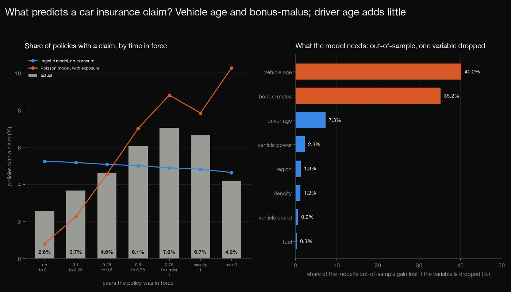
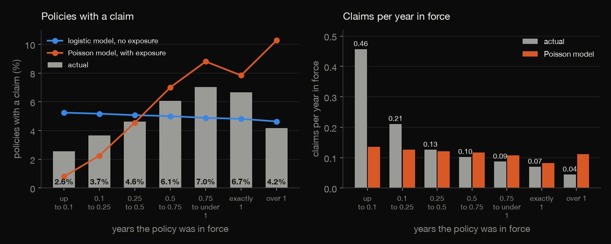
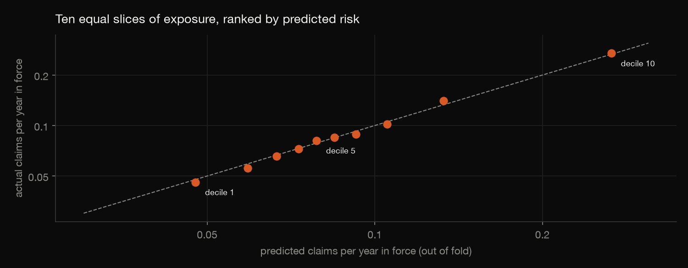
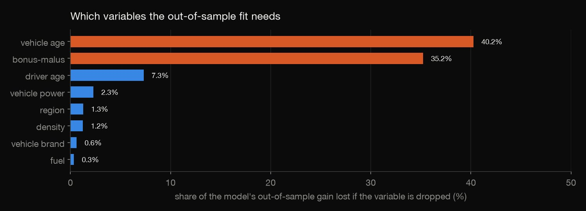
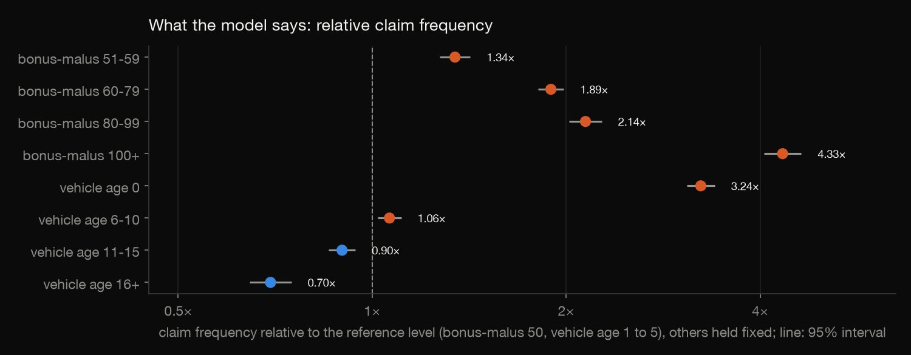
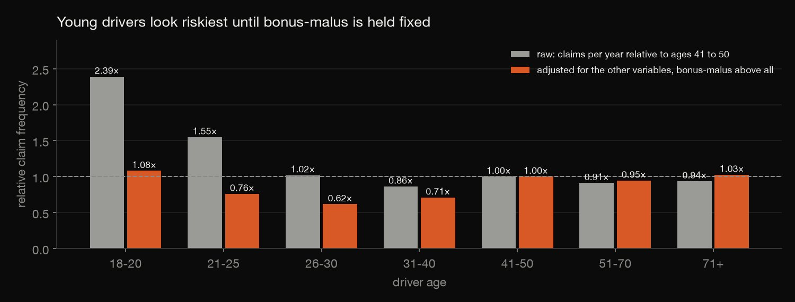

Python · Regression · 2026-10
What Predicts a Car Insurance Claim?
On 678,013 real French policies, out of fold, vehicle age and bonus-malus carry most of what predicts a claim (40% and 35% of the model's gain), the riskiest tenth of exposure claims 2.7 times the average, and a logistic model that ignores how long a policy was in force cannot see that claims rise with it.

Claim frequency only (no claim amounts), for one insurer over an unstated period. The Poisson model assumes claims are proportional to exposure, which fails for policies in force a short time. The effects are associations, not causes, and not a pricing recommendation. OpenML's description says 677,991 policies and the file has 678,013. Licence: OpenML lists CC0; the CASdatasets package it comes from is GPL (>= 2).
01 — The problem
The usual first model of car insurance claims is a logistic regression of whether a customer claimed. On real policies, many of them in force for only part of a year, what does that miss, and which features really matter?
The task follows DataCamp's "Modeling Car Insurance Claim Outcomes". The data is a real French motor third-party liability portfolio of 678,013 policies (OpenML, CC0), not a course file.
02 — What I built
Two models of the same policies, tested on policies they have not seen:
- The audit: counts, blanks, caps on claims and exposure, and how many policies share every risk feature.
- The models: a Poisson model with exposure as an offset, and the naive logistic model of "any claim".
- The tests: deviance, Gini, lift, calibration and the importance of each variable, all out of fold.
- Check:
check.pyproves each of 60 fits solves its score equations and rebuilds the rest in plain Python: 657 numbers.
03 — How it was built
- 01
Download the policies
OpenML's
freMTPL2freq(about 36 MB; licence CC0 as OpenML lists it), from the CASdatasets R package: one row per policy with its risk features, claim count and exposure. It is not committed; the script keeps the checksum and the count OpenML states.URL = "https://openml.org/data/v1/download/20649148/freMTPL2freq.arff" - 02
Audit and cap
No blanks or repeated ids. As in Noll, Salzmann and Wuthrich (2018), claim counts are capped at 4 and exposure at 1 year; vehicles and drivers of any age are kept; the covariate profiles are counted.
claims = np.minimum(df["ClaimNb"].to_numpy(), 4).astype(float); expo = np.minimum(df["Exposure"].to_numpy(), 1.0) - 03
Fit with exposure as an offset
The claim count is Poisson with the log of the exposure as an offset, so the coefficients are relative claim frequencies per year; the naive model is a logistic regression of any claim, with no exposure. Both are fitted by iteratively reweighted least squares, and the score equations are asserted to hold.
mu = np.exp(eta); w = mu; z = eta - offset + (y - mu) / mu - 04
Score out of sample, by profile
Five folds made of covariate profiles, because 38% of the policies share their risk features with another (a split contract) and twins must not be split between training and test. Deviance, Gini, lift and calibration come from out-of-fold predictions only.
fold = prof.map(lambda s: zlib.crc32(s.encode()) % 5).to_numpy() - 05
Prove the fits and recount the rest
check.pyrebuilds the 52 columns in plain Python and checks that every stored fit (60 of them) solves X'(y - mu) = 0 on the rows it was fitted to; the likelihoods are strictly concave, so that proves the maximum-likelihood fit. Then it rebuilds every prediction, deviance, Gini coefficient, calibration and standard error.assert m < 5e-5, (s, k, "score equations not met", m)
04 — Results
The policies and the cleaning. 678,013 policies with 358,499 years of exposure, 34,060 with a claim (5.0%), 36,102 claims, 0.101 claims per year in force. 1,224 policies have an exposure above one year (the longest is 2.01), capped at 1; 9 have more than 4 claims (up to 16), capped at 4. 257,911 policies (38%) share every risk feature with another policy, which is why the folds are made of covariate profiles.
| In force | Actual | Logistic | Poisson |
|---|---|---|---|
| up to 0.1 | 2.6% | 5.2% | 0.8% |
| 0.1–0.25 | 3.7% | 5.2% | 2.3% |
| 0.25–0.5 | 4.6% | 5.1% | 4.5% |
| 0.5–0.75 | 6.1% | 5.0% | 7.0% |
| 0.75–<1 | 7.0% | 4.9% | 8.8% |
| exactly 1 | 6.7% | 4.8% | 7.8% |
| over 1 | 4.2% | 4.6% | 10.3% |

Exposure is not a detail. The table is the share of policies with a claim by the time the policy was in force, in years. It rises from 2.6% for policies in force up to 0.1 year to 7.0% for 0.75 to under 1 year. The logistic model has no exposure and predicts 5.2% for the shortest and 4.6% for the longest; the Poisson model, with the offset, follows the rise. But claims are not proportional to exposure here: policies in force up to 0.1 year had 0.457 claims per year, 6.5 times the 0.070 of full-year policies, and the Poisson model predicts 0.136 for them; it also over-predicts policies with an exposure above 1 (0.111 against 0.044). The data does not say why.

How good the ranking is. Out of fold, the Poisson model's mean deviance is 0.3132 against 0.3303 for one frequency for everyone (5.2% lower). Its Gini coefficient is 0.288, against 0.251 for the logistic model, and the riskiest tenth of exposure claims 2.68 times the average frequency (logistic 2.48). Predicted and actual frequencies agree to a few per cent across ten equal slices of exposure.
| Variable dropped | Columns | Gain lost |
|---|---|---|
| Vehicle age | 4 | 40.2% |
| Bonus-malus | 4 | 35.2% |
| Driver age | 6 | 7.3% |
| Vehicle power | 5 | 2.3% |
| Region | 21 | 1.3% |
| Density | 1 | 1.2% |
| Vehicle brand | 10 | 0.6% |
| Fuel | 1 | 0.3% |

What matters. Dropping vehicle age loses 40.2% of the model's out-of-sample gain in deviance and dropping bonus-malus 35.2%; driver age loses 7.3%, vehicle power 2.3%, region 1.3%, density 1.2%, brand 0.6% and fuel 0.3%.

The effects. From the full Poisson fit, with quasi-Poisson 95% intervals (dispersion 2.27) and the other variables held fixed. Against bonus-malus 50: 51-59 1.34× (1.27 to 1.42), 60-79 1.89× (1.81 to 1.98), 80-99 2.14× (2.02 to 2.27), 100 and over 4.33× (4.05 to 4.64). Against a vehicle aged 1 to 5 years: a vehicle in its first year 3.24× (3.08 to 3.40), 16 or more years 0.70× (0.65 to 0.75). Each doubling of the density goes with a 2.9% higher frequency, and diesel with 0.93× (0.90 to 0.96).

Driver age, raw and adjusted. The raw claim frequency of drivers aged 18 to 20 is 2.39 times that of drivers aged 41 to 50; with the other variables held fixed it is 1.08× (0.95 to 1.23). Ages 21 to 25: 1.55 raw, 0.76× (0.70 to 0.82) adjusted. Bonus-malus, which carries the claims history, takes most of the age signal.
05 — What I'd do next
- Add a claim-severity model (amounts) to get the cost of a policy, not only its frequency.
- Model the short policies differently, or add the exposure as a feature, to see how much of the miss at the short end can be repaired.
- Fit a gradient-boosted model on the same folds and see how much of the gap to the best published models a GLM leaves.